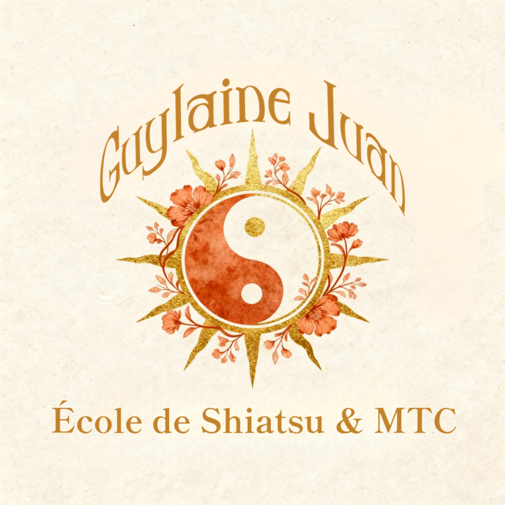
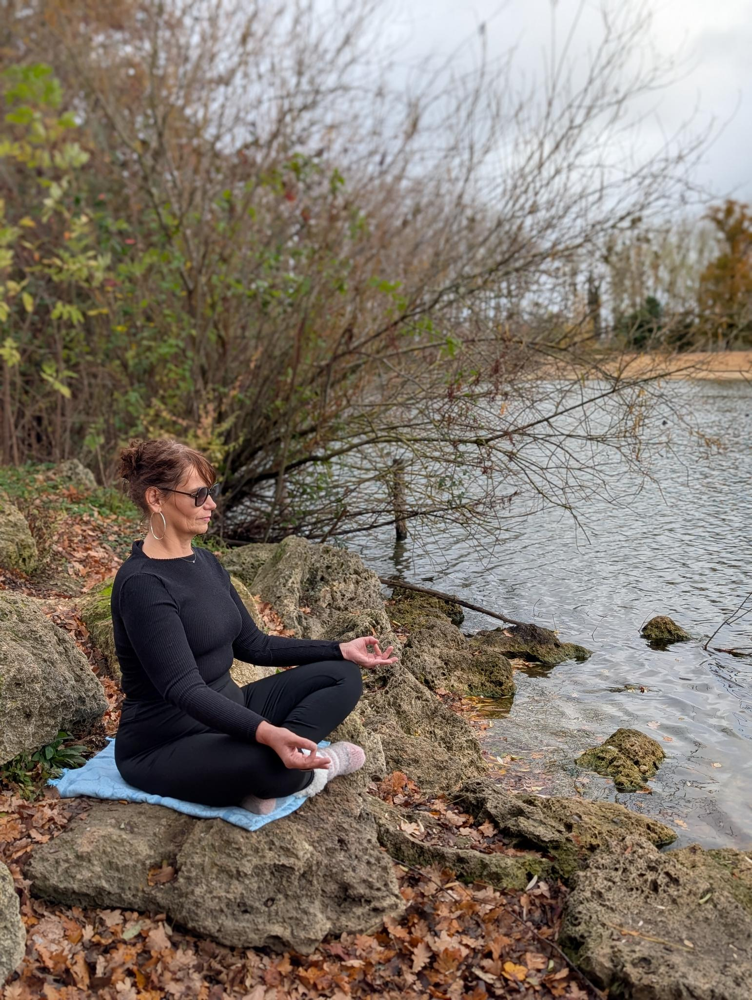

Guylaine Juan
École de Shiatsu & Médecine Traditionnelle Chinoise
Formation shiatsu professionnel en France
Guylaine Juan — École de Shiatsu & Médecine Traditionnelle Chinoise.
Distanciel + immersion en Drôme provençale.
Dans ma pratique depuis plus de 20 ans, j’ai observé une chose :
Le corps n’est pas une machine à réparer. C’est un équilibre à écouter.
Réserver un appel

- ✨ 20 ans d'expérience en MTC
- 👤 5000+ patients accompagnés
- 🎓 Diplôme certifié par Liberlo
- 📍 Partout en France et dans le monde
Une Approche Authentique
Le corps n’est pas une machine à réparer. C’est un équilibre à écouter.
Dans ma pratique depuis plus de 20 ans, j’ai observé que les déséquilibres apparaissent bien avant les symptômes visibles. C'est pour cela que le shiatsu agit en prévention.
Ma mission est de vous transmettre cette lecture du corps, pour que vous puissiez à votre tour accompagner avec justesse et profondeur. Que vous soyez en reconversion ou soignant, je vous aide à développer ce "toucher qui comprend".
Guylaine – Votre Enseignante
Guylaine Juan est praticienne et enseignante en Shiatsu et Médecine Traditionnelle Chinoise depuis plus de 20 ans.
Fondatrice de l'École de Shiatsu & MTC, elle forme aujourd’hui des praticiens et accompagne des femmes vers un alignement profond entre le corps, l’énergie et la réussite.
Son approche unique relie la rigueur des enseignements orientaux à une vision moderne du leadership et de la présence.
À travers des formations hybrides (distanciel et immersions en Drôme provençale), elle transmet bien plus qu'une technique : une lecture du vivant, du corps et du mouvement intérieur.
Le shiatsu n’est pas une méthode figée. C’est un art du ressenti, une précision énergétique, et une voie de transformation personnelle et professionnelle.
"Le shiatsu n'est pas une technique, c'est une lecture du vivant."
Guylaine Juan — École de Shiatsu & MTC incarne aujourd’hui une nouvelle génération d’enseignement : exigeant, accessible et profondément incarné.
📊 Formation et Expertise
- ✔️ Formée par André Nahum, Centre Shiatsu Paris
- ✔️ Plus de 20 ans d'expérience en pratique et enseignement
- ✔️ Spécialiste en MTC, rhumatologie, dermatologie
- ✔️ Experte en transformation personnelle et leadership

Guylaine Juan
Fondatrice de l'école
Nos Formations & Stages
Shiatsu Familial
Pour toute personne souhaitant soulager naturellement les petits maux du quotidien. Cours en distanciel sur Skool et un week-end en présentiel au Château de Poët-Célard.
Accessible à tous
EN SAVOIR PLUSShiatsu Professionnel
Formation complète pour les personnels soignants et les personnes en reconversion. Distanciel, deux week-ends en présentiel, zoom mensuel et évaluations sur Skool.
Reconversion · Soignants
EN SAVOIR PLUSLeadership Shiatsu
Une semaine immersive et résidentielle pour les cadres dirigeants. Retrouver son énergie profonde, son ancrage et sa capacité naturelle à diriger — au château, en Drôme provençale.
Cadres · Dirigeants
EN SAVOIR PLUSStage Méditation
Apprendre à méditer au Château de Poët-Célard. Une immersion d'exception sur 3 week-ends avec hébergement de luxe et restauration gastronomique inclus pour un apaisement total.
Hébergement Luxe · 3 WE
EN SAVOIR PLUSDécouvrir nos eBooks
La Bibliothèque du Shiatsu
Accédez à nos ressources exclusives pour votre pratique.
CONSULTER LES EBOOKSCe que disent nos élèves
"Cette semaine, j’ai 4 rendez-vous Shiatsu, je suis tellement contente 🙏 Ce matin, une cliente m’a dit à quel point elle avait ressenti les bienfaits dès la fin de la séance : respiration plus fluide, sensation incroyable… Elle te connaissait et m’a félicitée. J’étais émue. Merci pour ton enseignement, c’est grâce à toi 🙏"
"La formation Shiatsu Professionnel a complètement transformé ma pratique d'infirmière. J'ai trouvé une nouvelle voie professionnelle qui me passionne."
"L'authenticité de l'enseignement de Guylaine est remarquable. On sent la transmission d'un savoir véritable, pas juste des techniques."
"Le Corps du Pouvoir a été l'expérience la plus transformatrice de ma vie de dirigeant. Je gère mon énergie et mon stress d'une manière totalement nouvelle."
"Merci beaucoup Guylaine pour cette séance qui a été chamboulante mais qui m’apporte un peu plus d’éclairage sur ma vie et le sens à lui donner 🌟🫶"
Rejoindre la Communauté
Retrouve nos posts, astuces, partages, retours d’expérience, l'accès au conférence en direct et replay,. C’est l’endroit où on progresse ensemble, étape par étape.
Rejoindre la communautéContactez-nous
📍 Localisation
Ardèche, France
equipe@ecole-shiatsu-guylaine-juan.com
📱 Réseaux Sociaux
📘 Facebook : Guylaine Juan
📸 Instagram : GuylaineJuan
💼 LinkedIn : Guylaine Juan
▶️ YouTube : Guylaine Juan MTC
FAQ
Qu’est-ce que l’approche de l’École de Shiatsu Guylaine Juan ?
L’École de Shiatsu Guylaine Juan propose une transmission unique basée sur la lignée d'André Nahum (Centre Shiatsu Paris). Notre pédagogie combine la rigueur de la Médecine Traditionnelle Chinoise (MTC) classique et une flexibilité moderne grâce à un format hybride (théorie sur la plateforme Skool et pratique en immersion).
Proposez-vous une formation de Shiatsu professionnel ?
Oui, nous proposons un cursus complet de Shiatsu Professionnel structuré en plusieurs niveaux. De l’initiation au Shiatsu Familial jusqu’au programme avancé Le Corps du Pouvoir dédié aux dirigeants, chaque formation est conçue pour transformer la posture et le toucher du praticien.
Où se déroulent les stages de Shiatsu et MTC ?
Toutes nos immersions en présentiel se déroulent dans un cadre d'exception en Drôme Provençale, au Château de Poët-Célard. Ce lieu permet une déconnexion totale et une intégration profonde des enseignements théoriques de la MTC.
Quelle est la différence entre cette école et les fédérations (FFST, SPS) ?
Alors que les structures comme la FFST ou le SPS valident des parcours académiques globaux, l’école de Guylaine Juan se concentre sur une transmission de lignée directe. C’est une option idéale pour ceux qui recherchent une expertise spécifique en MTC classique et une approche pédagogique innovante mêlant distanciel et présentiel.
C'est quoi le Shiatsu Familial ?
Le Shiatsu Familial est une formation qui vous apprend à utiliser les techniques du Shiatsu pour soulager naturellement les petits maux du quotidien : stress, fatigue, maux de tête, tensions du dos, troubles du sommeil, maux de ventre. Elle est accessible à toutes les personnes qui souhaitent prendre soin de leur famille de manière naturelle, sans aucun prérequis.
Faut-il avoir des bases en médecine ou en bien-être pour suivre cette formation ?
Non. La formation Shiatsu Familial est conçue pour les débutants complets. Aucune connaissance préalable n'est nécessaire. Guylaine Juan vous guide pas à pas, depuis les bases de l'énergie jusqu'aux gestes pratiques.
Comment se déroule la formation Shiatsu Familial ?
La formation se déroule en deux temps : des cours écrits, des vidéos et des tests sur la plateforme Skool, accessibles à votre rythme depuis chez vous, puis un week-end en présentiel au château de Poët-Celard en Drôme provençale pour mettre en pratique les techniques apprises.
Que vais-je savoir faire à la fin de la formation Shiatsu Familial ?
À la fin de la formation, vous serez capable de soulager naturellement le stress et l'anxiété, les tensions musculaires et les douleurs du dos, les troubles du sommeil, les maux de tête et de ventre, et d'accompagner vos proches dans leur bien-être quotidien grâce aux gestes du Shiatsu.
Combien coûte le programme Shiatsu Familial ?
Contactez nous à equipe@ecole-shiatsu-guylaine-juan.com.
Le Shiatsu Familial peut-il remplacer un médecin ?
Non. Le Shiatsu Familial est une approche complémentaire qui agit sur l'énergie et le bien-être. Il ne remplace pas un suivi médical. Pour tout symptôme persistant ou grave, consultez toujours un professionnel de santé.
À qui s'adresse la formation Shiatsu Professionnel ?
La formation Shiatsu Professionnel s'adresse aux professionnels de santé souhaitant enrichir leur pratique — infirmiers, aides-soignants, kinésithérapeutes, médecins, sages-femmes — ainsi qu'à toutes les personnes en reconversion professionnelle souhaitant exercer le métier de praticien en Shiatsu.
Peut-on exercer le Shiatsu comme métier après cette formation ?
Oui, la formation Shiatsu Professionnel est une formation certifiante qui vous donne les bases théoriques et pratiques pour exercer en cabinet, à domicile ou en complément d'une activité de soin existante.
Comment se déroule la formation Shiatsu Professionnel ?
La formation combine des cours écrits, des vidéos et des tests sur la plateforme Skool, un zoom mensuel avec Guylaine pour répondre à vos questions, et deux week-ends en présentiel au château de Poët-Celard en Drôme provençale.
Combien coûte la formation Shiatsu Professionnel ?
Contactez nous à equipe@ecole-shiatsu-guylaine-juan.com.
Quelle est la différence entre le Shiatsu Familial et le Shiatsu Professionnel ?
Le Shiatsu Familial est destiné aux personnes qui souhaitent prendre soin de leur entourage sans exercer à titre professionnel. Le Shiatsu Professionnel est une formation certifiante complète, qui couvre la théorie de la médecine traditionnelle chinoise, les protocoles de traitement, le diagnostic énergétique et la pratique clinique, pour exercer en tant que praticien.
La formation Shiatsu Professionnel est-elle finançable ?
Guylaine Juan est en cours d'obtention de la certification Qualiopi, qui permettra aux apprenants d'accéder aux financements professionnels via leur OPCO ou d'autres dispositifs. Contactez-nous pour connaître les dernières informations.
Où se déroulent les week-ends en présentiel ?
Les week-ends se déroulent au château de Poët-Celard, situé en Drôme provençale. Un cadre naturel propice à l'apprentissage et au ressourcement.
C'est quoi le programme Leadership Shiatsu ?
Le Leadership Shiatsu est un programme immersif de 5 jours au château de Poët-Celard en Drôme provençale, conçu pour les cadres dirigeants qui ont perdu leur élan, leur clarté ou leur autorité naturelle.
À qui s'adresse le Leadership Shiatsu ?
Ce programme s'adresse aux dirigeants, managers et cadres qui ressentent une déconnexion, qui ont perdu leur énergie de leader, ou qui cherchent à retrouver une autorité naturelle et authentique.
Comment se déroule la semaine Leadership Shiatsu ?
Une semaine en présentiel au château de Poët-Celard. Travail sur le corps, l'énergie et la posture, guidé par Guylaine Juan, avec des protocoles issus de la MTC et du Shiatsu.
Combien coûte le programme Leadership Shiatsu ?
Contactez nous à equipe@ecole-shiatsu-guylaine-juan.com.
Pourquoi travailler le leadership par le corps ?
Le leadership authentique se construit aussi via l'équilibre interne. Travailler par le corps permet d'agir directement sur les déséquilibres liés au stress, à la charge mentale et à l'épuisement, au-delà de la réflexion mentale seule.